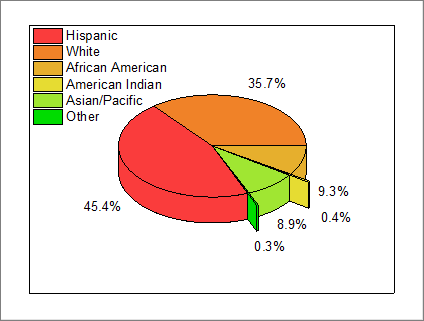
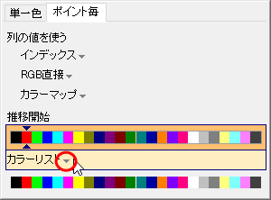
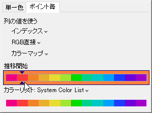
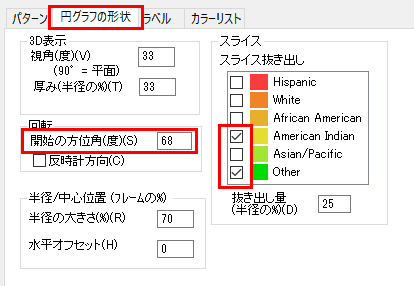
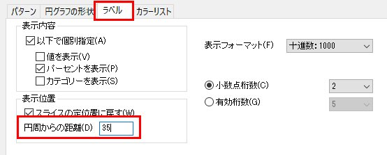

3D円グラフ
3D-Pie-Chart
サマリー
Originの3D円グラフは、その表示の仕方を詳細に設定することができます。スライスの厚さ、切り離し、表示角度、サイズ、グラフの回転を設定できます。複数のスライスをすべて切り離して表示することもできます。
- 
学習する項目
- 3D円グラフを作成し、プロット色を変更する
- 円グラフの表示角度を編集する
- スライスをすべて切り離して表示する
- スライスにラベルを付けて、引出し線を追加し、ラベルの位置を再調整する。
ステップ
ラーニングセンターにある、このグラフを参照してください。(ヘルプ：ラーニングセンターメニューを選択、または キーボードのF11
キーを押して、グラフサンプル：Statistical Graphs-3D Pie Chartを選択します)
- データ\Samples\Graphing\3D Pie Chart.dat
をワークシートにインポートし、列のロングネームをDemographicおよびPercentに変更します。
- 2列目を選択し、メニューから作図：基本の2Dグラフ：３Dカラー円グラフと操作して３D円グラフを作成します。
- グラフをダブルクリックして、作図の詳細ダイアログを開きます。パターンタブの塗りつぶしグループで、色ドロップダウンをクリックします。ポイント毎タブのカラーリストをクリックしてドロップダウンを開きます。
- 
- System Color Listを選択し、推移開始で2番目の色を選択して適用をクリックします。
- 
- 円グラフの形状タブを開き、以下のように設定します。
- 
- ラベルタブを開き、表示位置グループのスライスの定位置に戻すのチェックを外します。オフセットが(%)を超える場合は引出し線を表示にチェックを入れて、値を
2に設定します。
- 
- OKをクリックして作図の詳細ダイアログを閉じます。凡例をドラッグして円グラフの左側に配置します。引き出し線がラベルの後ろにあることに注意して、ラベルをドラッグして再配置します。グラフは次のようになります。